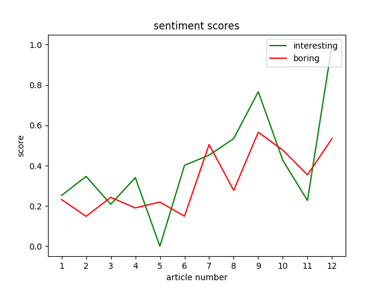
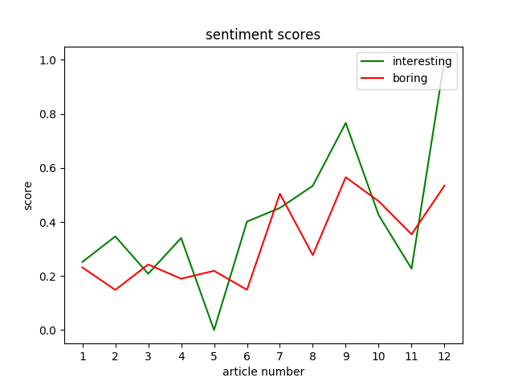
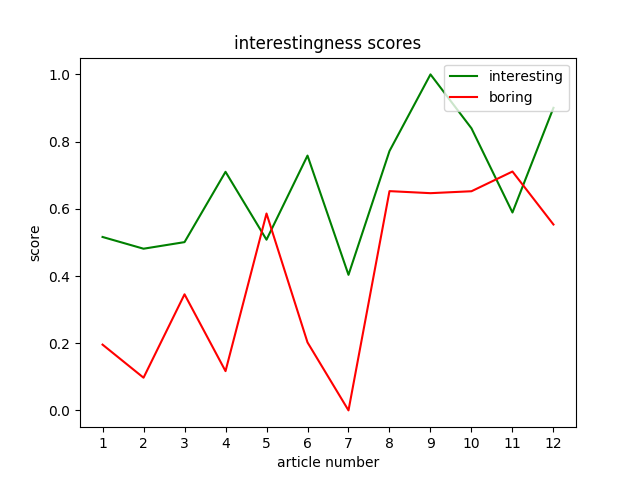
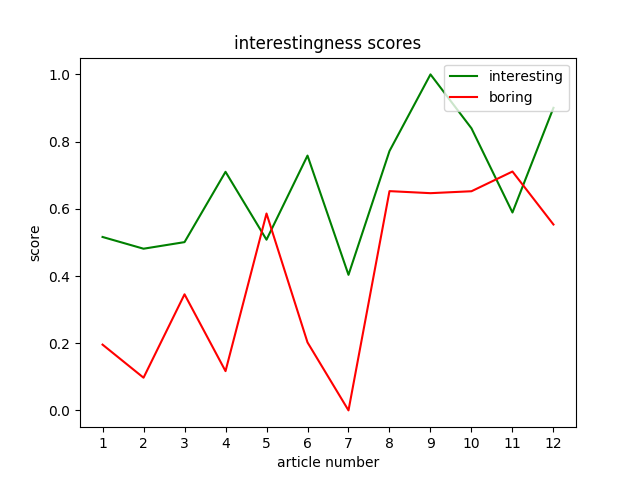

Interestingness
A quantification of interestingness, using an original implementation of "Automatic Prediction of Text Aesthetics and Interestingness", Ganguly et al.
Overview
Implemented in Python. Considers:
- topic diversity
- sentiment polarity
- word repetition
- word length
- presence of adjectives and adverbs
Resources
- GloVe - word-vector representations
- SentiWordNet - sentiment analysis
- Gensim - latent dirichlet allocation for topic modeling
- NLTK - text pre-processing, POS tagging
- MatPlotLib - data visualization
Control Flow
Input a set of interesting and factual articles
Calculate scores for each subcategory, e.g. topic diversity
Normalize each score
Calculate weights for each subcategory by its ability to separate interesting and factual articles
Perform weighted sum to determine interestingness score
Data Visualization
 



 

Future Work
General
- Compare decaying weight formula given in "Automatic Prediction of Text Aesthetics and Interestingness" to alternatives.
- Obtain larger corpus of "interesting" and "factual" articles for more thorough analysis.
- Determine ideal weights when performing weighted sum of each sub-category to calculate an interestingness score.
Topic Diversity
- Determine optimal sub-document size when discretizing document into chunks.
- Determine optimal topic number and size when performing LDA.
Sentiment Polarity
- Determine optimal sub-document size when discretizing document into chunks.